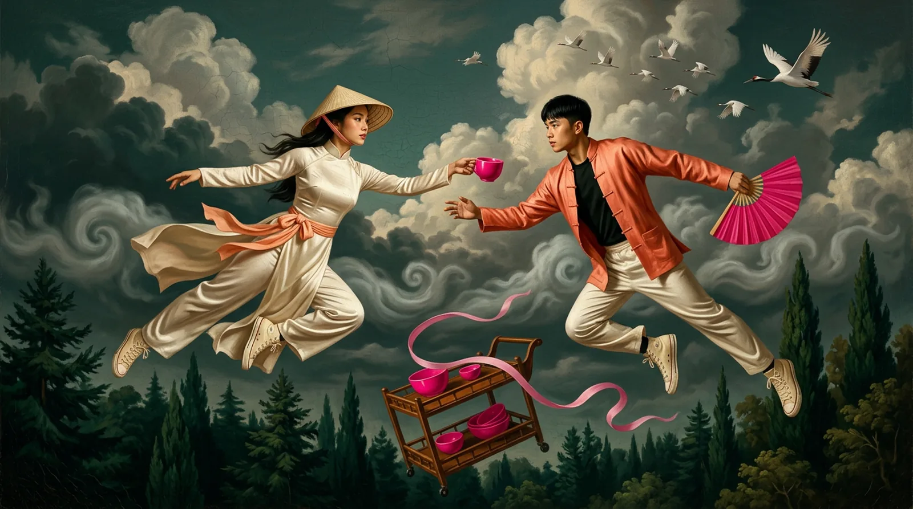

Serica Editions — Winter ’26
The
Lacquer
Edition
A new world of commerce.
150+ product updates.
© Serica Inc.
Terms of Service
Privacy Policy
Painting, characters & props: original. Type: Neue Montreal / HWCigars.
The box, unsealed
Every update,
one scroll.
Twelve chapters, 199 updates, one lacquer box. Take what is useful — the thinking, the palette, the pacing — and paint your own edition with it.
150+product updates
12chapters in one scroll
1saturated accent
0external requests
A design study. Copy structure and interaction pattern follow the original Editions page; characters, props and paintings are new. Not affiliated with, endorsed by, or a redistribution of any brand’s artwork.